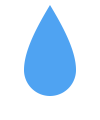
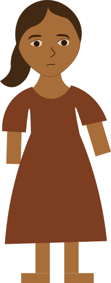
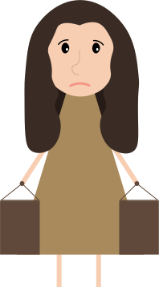
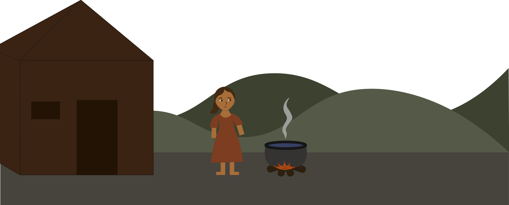

Goal 6
Ensure availability and sustainable management of water and sanitation for all
Half the world experiences severe water scarcity every year — and the number is growing.
6.1
By 2030, achieve universal and equitable access to safe and affordable drinking water for all
6.2
By 2030, achieve access to adequate and equitable sanitation and hygiene for all and end open defecation, paying special attention to the needs of women and girls and those in vulnerable situations
6.3
By 2030, improve water quality by reducing pollution, eliminating dumping and minimizing release of hazardous chemicals and materials, halving the proportion of untreated wastewater and substantially increasing recycling and safe reuse globally
6.4
By 2030, substantially increase water-use efficiency across all sectors and ensure sustainable withdrawals and supply of freshwater to address water scarcity and substantially reduce the number of people suffering from water scarcity
6.5
By 2030, implement integrated water resources management at all levels, including through transboundary cooperation as appropriate
6.6
By 2020, protect and restore water-related ecosystems, including mountains, forests, wetlands, rivers, aquifers and lakes
6.7
By 2030, expand international cooperation and capacity-building support to developing countries in water- and sanitation-related activities and programmes, including water harvesting, desalination, water efficiency, wastewater treatment, recycling and reuse technologies
6.8
Support and strengthen the participation of local communities in improving water and sanitation management
The Clock Is Ticking...
In 2015, the world pledged to ensure clean water and sanitation for all by 2030 through Sustainable Development Goal 6, but as of 2022, not a single target is on track.
This is the story about Maya
Every morning, 12-year-old Maya wakes before the sun. Not to get ready for school—but to fetch water.
She walks nearly 3 kilometers down a dusty path in her rural village. The river she collects from isn't clean, but it's the only option.
Boiling the water helps a little—when there's enough fuel,
but some days the water makes her sick, and she can't go to school..
Maya is one of 2.2 billion people worldwide without access to safe drinking water.
Her family lives in a region hit by frequent droughts. Part of the 1.4 billion affected by droughts between 2002 and 2021.
On the news, Maya sees images of places with shiny taps, but even those places are changing.
In 2022, half the world faced severe water scarcity. One in four people lived with extremely high water stress.
Maya's river flows through two countries.
But neither government talks to the other about how to protect it.
Less than 20% of countries with shared waters have strong cooperation.
There is progress:
Aid for water projects rose 10% in 2022, after five years of decline. Wastewater treatment is improving, and some regions are managing water more efficiently.
But Maya doesn't feel that progress yet.